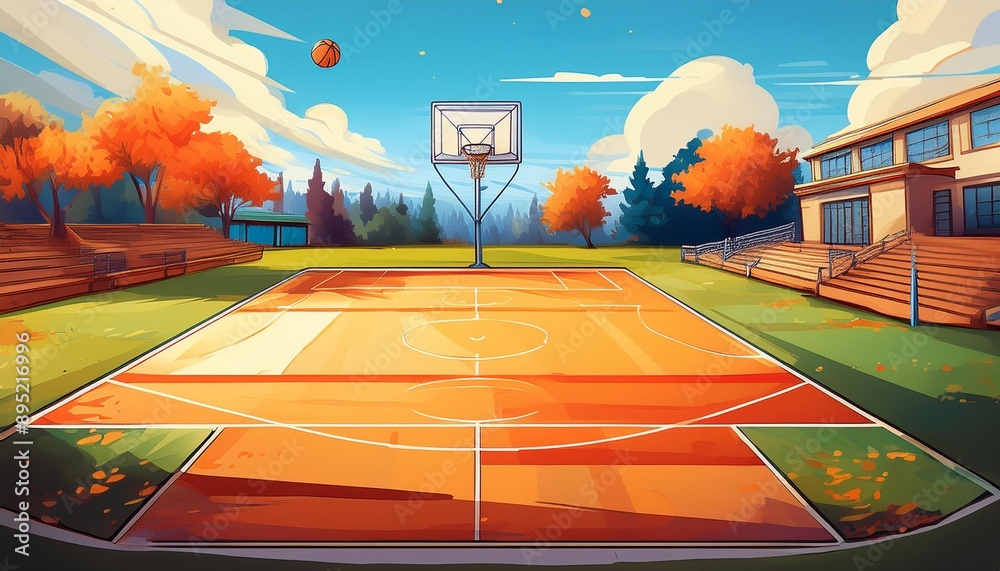
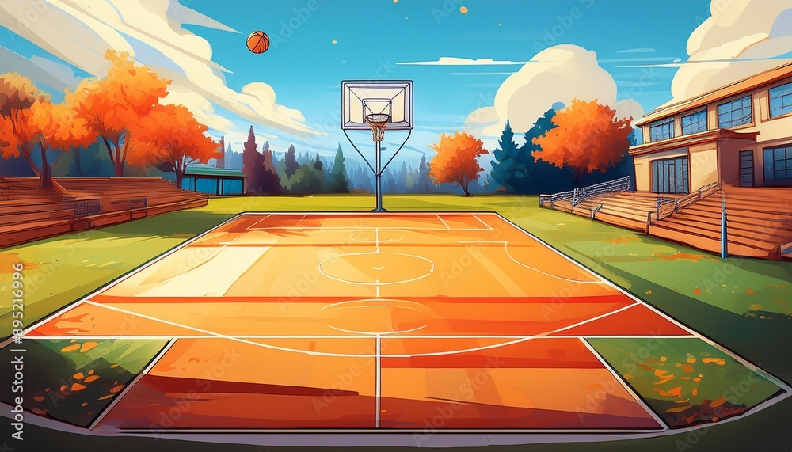

MODERN COMPREHENSIVE SCHOOL KABINGO
| ACADEMIC | SPORTS | ONLINE FORM |
   |
  Athletics
and Track & Field: St. Mary’s College Kisubi has also excelled in
athletics, particularly in track and field events. The school frequently
participates in national athletics competitions, and its students have
earned numerous medals in events like sprints, long-distance races, and
field events (such as javelin and shot put). The school's commitment to
physical fitness and athletic training has resulted in the development
of highly competitive athletes. Athletics
and Track & Field: St. Mary’s College Kisubi has also excelled in
athletics, particularly in track and field events. The school frequently
participates in national athletics competitions, and its students have
earned numerous medals in events like sprints, long-distance races, and
field events (such as javelin and shot put). The school's commitment to
physical fitness and athletic training has resulted in the development
of highly competitive athletes. |
 Football
Excellence: SMACK has a strong
football tradition, with its team frequently competing in the top-tier
Copa Coca-Cola
football tournaments. Over the years, SMACK has produced some talented
footballers who have progressed to play for top local football clubs and
even the Ugandan national team. The school’s football program focuses on
technical skills, teamwork, and discipline, helping students balance
both sports and academics. Football
Excellence: SMACK has a strong
football tradition, with its team frequently competing in the top-tier
Copa Coca-Cola
football tournaments. Over the years, SMACK has produced some talented
footballers who have progressed to play for top local football clubs and
even the Ugandan national team. The school’s football program focuses on
technical skills, teamwork, and discipline, helping students balance
both sports and academics. |
 International
Exposure: Over the years, St.
Mary’s College Kisubi has been involved in international competitions,
particularly in rugby and football. This exposure has helped the school
improve its sports programs and benchmark against international
standards, fostering a competitive sports culture. International
Exposure: Over the years, St.
Mary’s College Kisubi has been involved in international competitions,
particularly in rugby and football. This exposure has helped the school
improve its sports programs and benchmark against international
standards, fostering a competitive sports culture. |